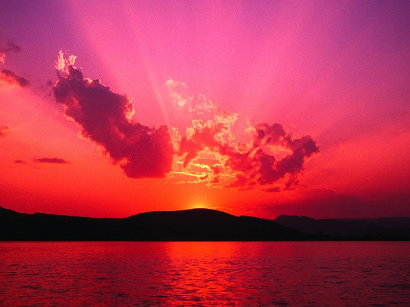
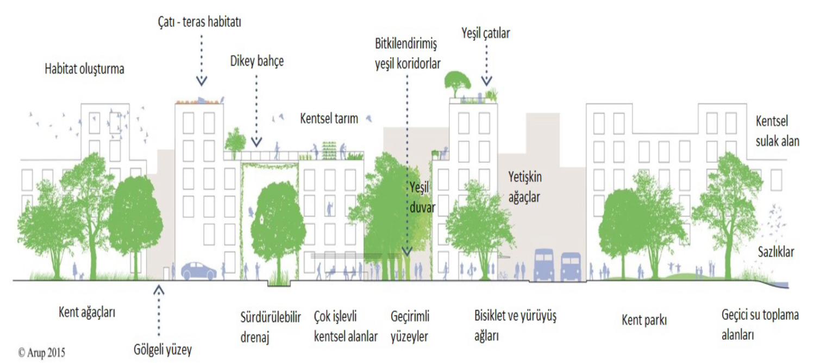

İklim değişikliği,karşılaştırılabilir zaman dilimlerinde gözlenen doğal iklim
değişikliklerine ek olarak,doğrudan Güneş enerjisi yansımaları, dünyanın yörüngesi, atmosferik bileşenler,atmosferin albedo
özellikleri, volkanik küller, bulut örtüsü faktörleri iklim değişikliğine sebep olmaktadır.
Bu faktörler, birlikte veya tek başına sera gazlarını ve sera etkisini artırmaktadır.
İklim değişikliği yeryüzünün sıcaklığındaki artıştan, yani küresel ısınmadan kaynaklanır,bu da
atmosfere doğal olarak oluşanlardan daha fazla sera gazı eklemekten gelir.Küresel ısınmanın
nedeni, atmosferdeki sera gazlarının normal değerlerinden daha fazla olmasıdır.Atmosferde
bulunan sera gazlarının derişimi değiştiği zaman, atmosferin bileşimi de değişmektedir.
Bu değişme sonucunda iklim sistemini oluşturan atmosfer, hidrosfer ve litosferde bozulmalar
başlamış ve iklim değişme süreci başlamıştır. Daha ılık okyanuslar fırtınaların daha güçlü ve tahrip edici hale gelmesi anlamına gelir.Hava ve
deniz suyundaki sıcaklık artışı buzulları eritir,bu da denizlerin kıyılarımıza doğru daha da
yükselmesine neden olur.Ekstra sıcaklıklar aynı zamanda uzun süren kıtlıklar ve daha ölümcül
yaban hayatı yangınları anlamına gelir.Bu liste bu şekilde devam eder ve dünya çapında bir iklim krizi
oluşturur, üstelik bu sonuçların tamamı birbiri ile bağlantılıdır.Gezegenimiz için devam eden ısınma ve iklim
değişikleri dizileri çok büyüktür
İklim Değişikliği
İklim Değişikliği Nedir?
veya dolaylı olarak küresel atmosferin bileşimini bozan insan
faaliyetleri sonucunda iklimde oluşan değişiklik olarak tanımlanır.İklim Neden Değişiyor?
İklim Değişikliğinin Sonuçları Nelerdir?
İklim Değişikliğiyle Mücadele İçin Bireysel Olarak Neler Yapılabilir?
İklim değişikliği ile ilgili yeterince bilgi edindiğimize göre bu alanda yapılan çalışmaları inceleyebiliriz.
Bu proje şehirlerde binaların çatılarına kurulan bahçeler aracılığıyla iklim değişikliğiyle mücadele etmeyi hedefliyor.Bu projenin temel amacı,çatı bahçeleri vasıtasıyla şehirlerdeki yeşil alan miktarını artırarak karbon emisyonlarını azaltmak,enerji tasarrufu sağlamak ve ekosistemlere katkıda bulunmaktır.

Bu proje ile şehirlerdeki yeşil alan miktarı artırılarak şehir ekosistemine katkı sağlanabilir,çatı bahçeleri ısı yalıtımına katkıda bulunarak enerji tüketimini azaltabilir,oluşan bitki örtüsü aracılığıyla karbon emisyonlarını absorbe ederek atmosferdeki karbon miktarını azaltabilir ancak bu projenin avantajları olduğu kadar dezavantajları da mevcuttur:Her bina uygun olmayabilir bu nedenle proje sınırlı bir etki alanına sahip olabilir,uygun bina olsa bile binanın konumunun iyi olmaması ve altyapısının yetersiz olmasında dolayı teknik zorluklara neden olabilir,bahçelerin kurulumu ve bakımı bazen maliyetli olabilir ancak yapılacak olan evler bu projeye uygun yapılırsa projeyi hayata geçirmek daha kolay ve maliyetsiz olacaktır.Buraya tıklayarak proje hakkında daha fazla bilgi edinebilirsiniz.